Featured Projects
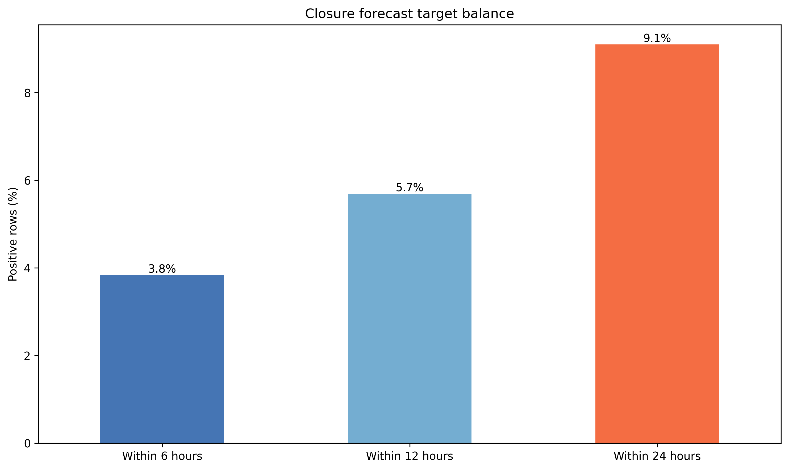
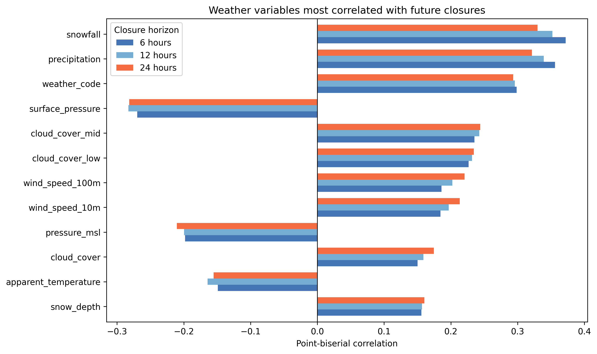
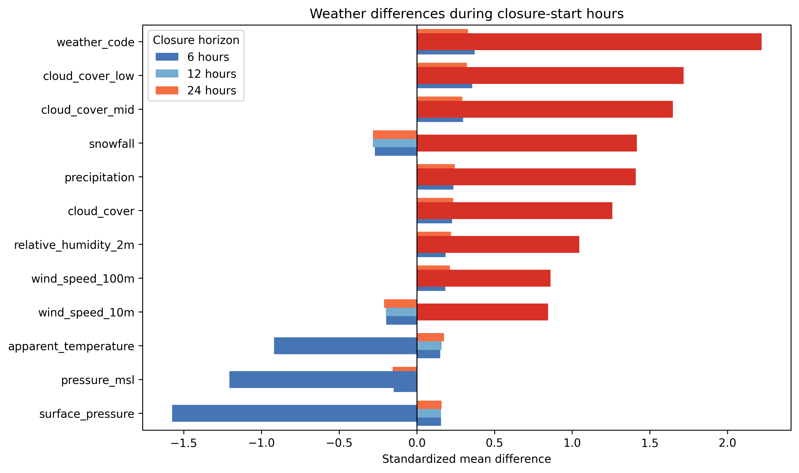
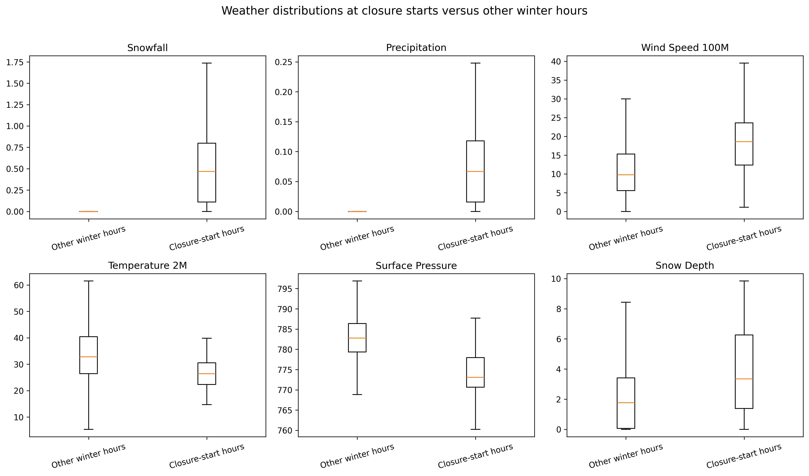
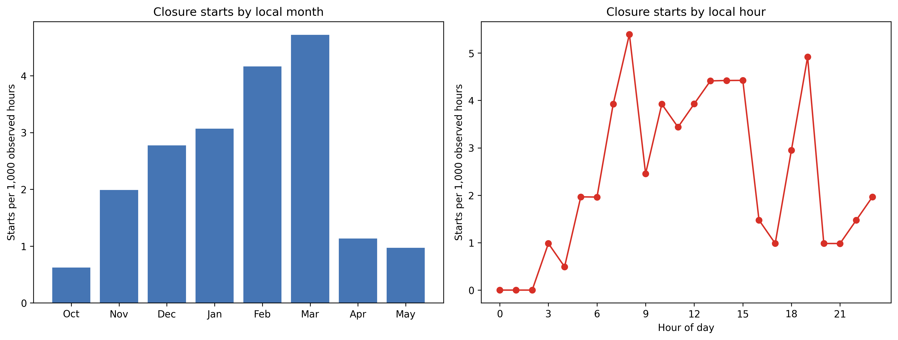
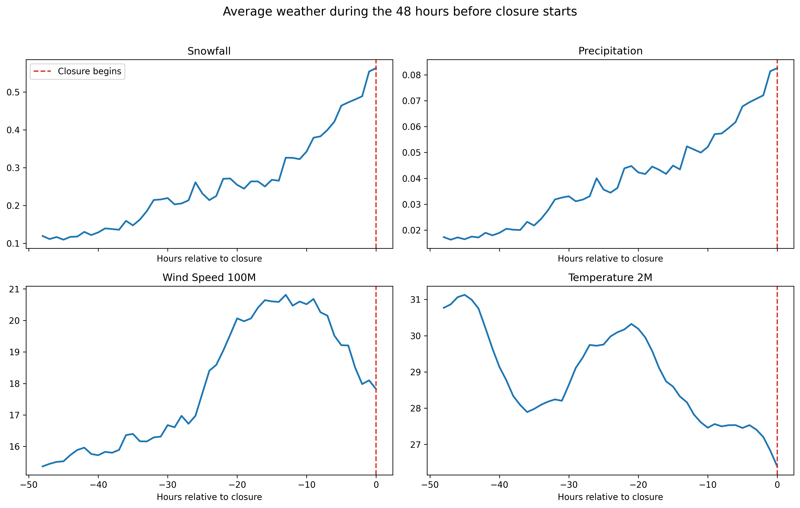
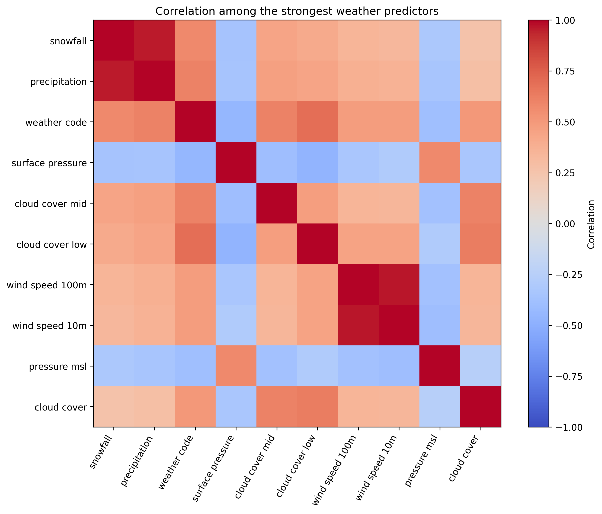
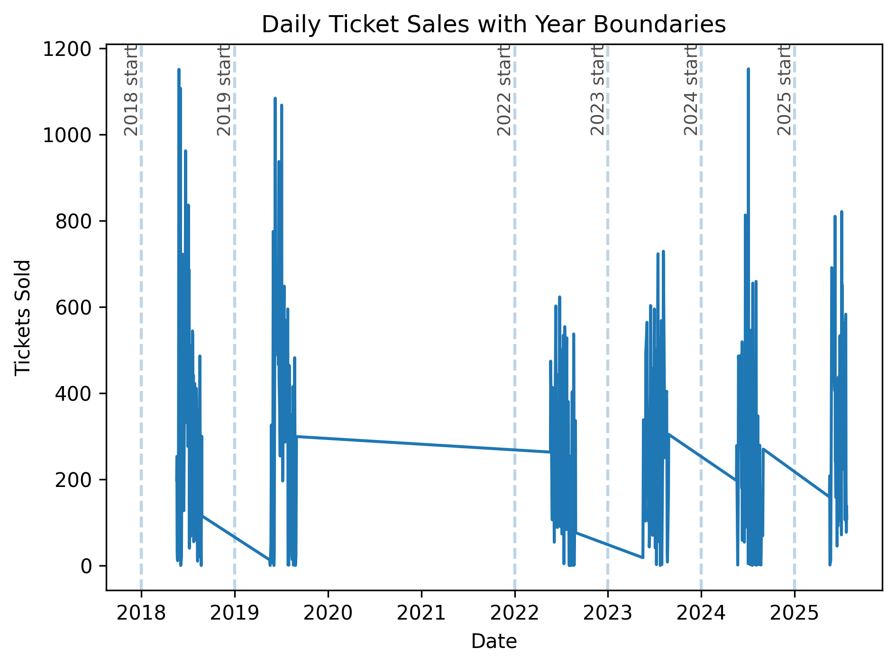
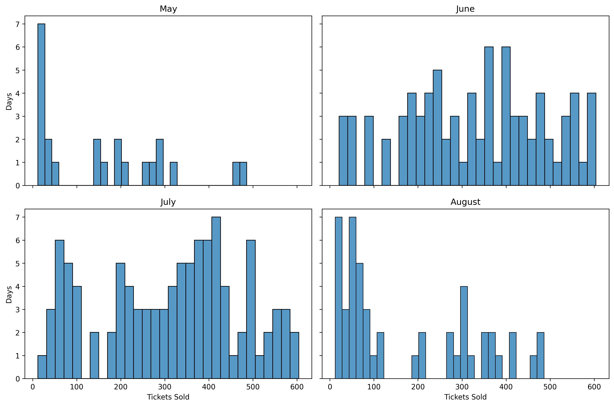
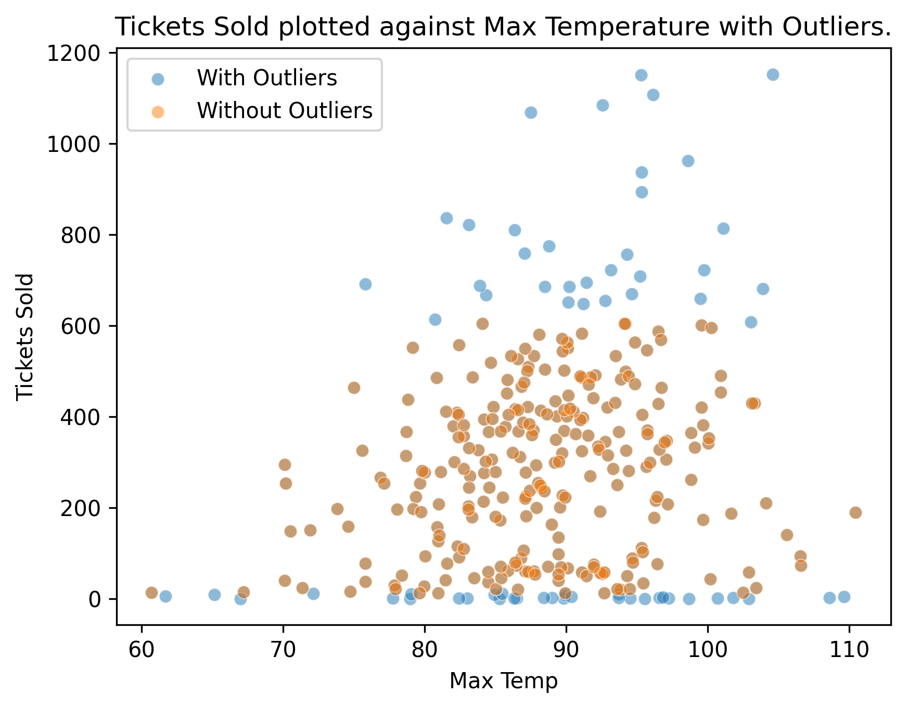
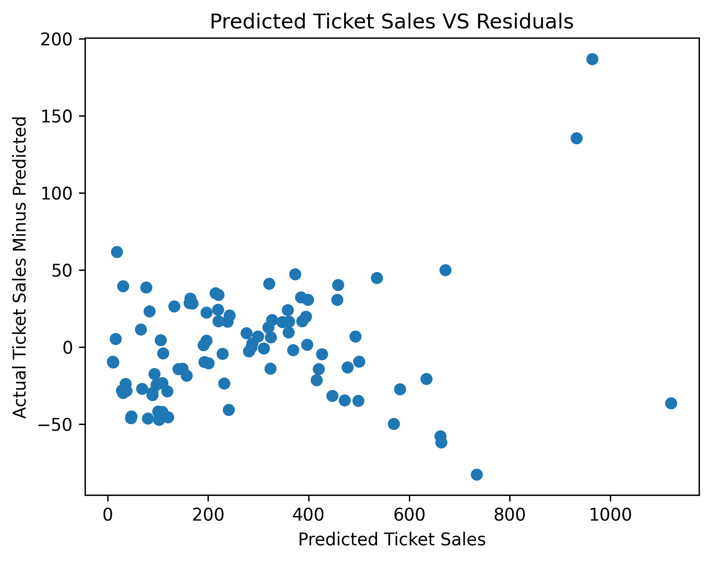
Hi, I’m Hudson, a recent UC Berkeley Applied Mathematics graduate looking for entry-level roles in data analytics, data engineering, or software engineering.
In my projects, I’ve worked with real-world datasets from initial cleaning and exploration through modeling and presentation. That has included writing Python and SQL, working with APIs, comparing machine-learning models, and creating web interfaces for the results.
Most recently, I developed an I-80 closure-risk project using historical weather and manually reviewed closure records, then deployed its data pipeline with AWS Lambda and S3. I’ve also analyzed waterpark sales data to study demand patterns and compare predictive approaches.











Used for bias/variance analysis, model assumptions, and uncertainty reasoning.
Data workflows, analysis, automation, and web interfaces.
Feature engineering, model training, and evaluation pipelines.
Scheduled data collection, cloud storage, and dashboard publishing.
I usually start with simple, interpretable models to build intuition, then layer on complexity only when it actually helps. I spend a lot of time on feature engineering and sanity-checking results so I understand what’s driving the predictions.

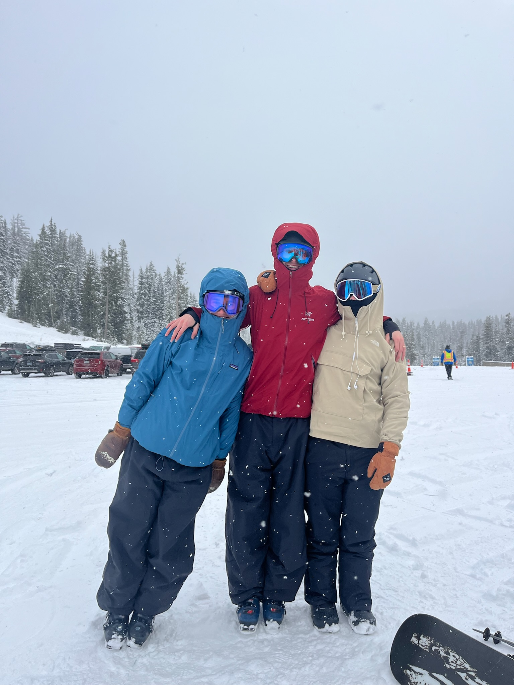